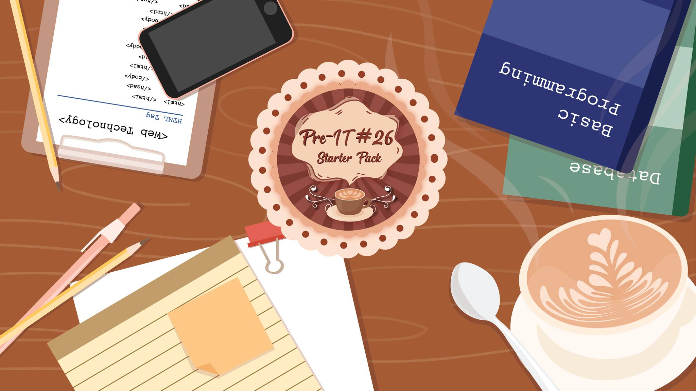
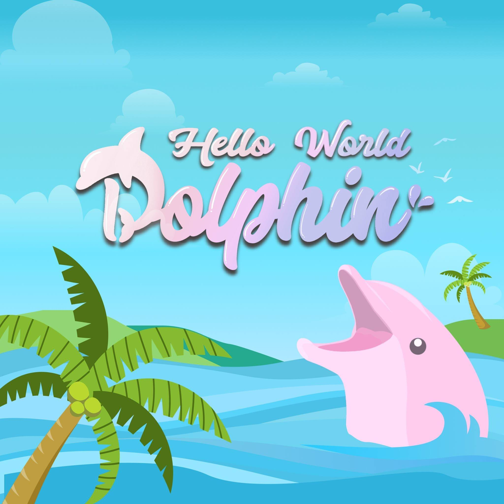

-Starterpack-
โครงการ Pre-IT#26 Starter Pack เพื่อปูพื้นฐานความรู้เบื้องต้นในวิชา การเขียนโปรแกรม เทคโนโลยีเว็บ
และฐานข้อมูล ให้แก่นักศึกษาใหม่ชั้นปีที่ 1 มีนักศึกษาเข้าร่วมทั้งหมด 113 คน เป็นเวลา 1 สัปดาห์
โดยใช้ Facebook Group สำหรับการเรียนเนื้อหาวิชาการ และใช้ Microsoft Teams สำหรับพบปะ
ระหว่างรุ่นพี่-รุ่นน้อง ไขข้อสงสัยด้านไอที และลงมือปฏิบัติจริงเพื่อเสริมความเข้าใจให้กับผู้เข้าร่วมโครงการ
ในทุกรายวิชา โดยมีรายละเอียดของแต่ละวิชามีดังนี้
- การเขียนโปรแกรม (Programming) เรียนรู้การเขียน Flowchart การเขียนโปรแกรมเบื้องต้นด้วยภาษา
Java การใช้งาน Command Line และทำความรู้จักกับ Git เบื้องต้น - เทคโนโลยีเว็บ (Web Technology) ทำความรู้จักพื้นฐานการเขียนเว็บไซต์ โดยใช้ HTML CSS และ
JavaScript เบื้องต้น - ฐานข้อมูล (Database) ทำความเข้าใจความหมายและความสำคัญของฐานข้อมูล การใช้ SQL
เบื้องต้นเพื่อจัดการตารางข้อมูลและเรียกดูข้อมูล

-helloworld-
Hello World - Dolphin เป็นโครงการที่จัดขึ้นเพื่อแบ่งปันความรู้ในด้านการสร้างเว็บไซต์ และเกม โดยจะมีการจัดการเรียน
การสอนให้กับนักศึกษาที่เข้าร่วมโครงการสำหรับโครงการในปีนี้จะมีสาขาให้นักศึกษาได้เลือกตามความสนใจทั้งหมด 5 สาขา
คือ Front-End, Web Design, Infrastructure, Game Development และ Game Design